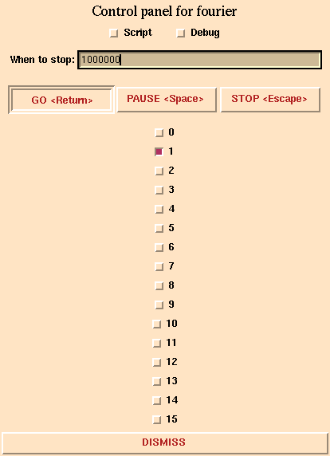
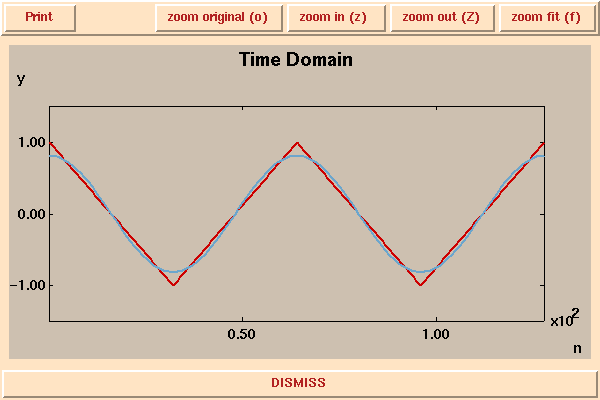
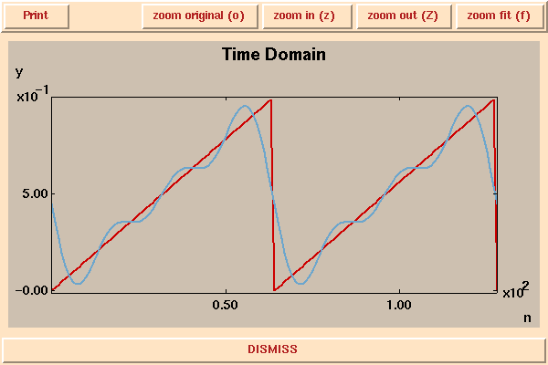
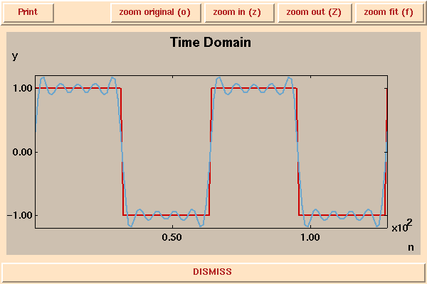
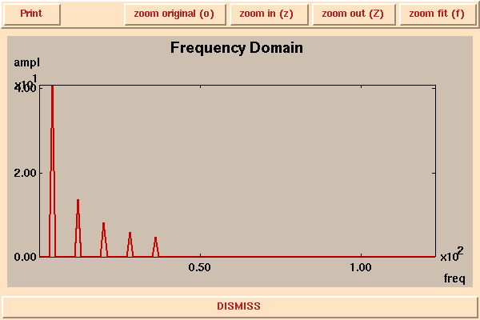

In this demonstration, you witness the construction of non-sinusoidal waveform from sinusoidal components. The control panel looks like this:

The buttons turn on and off the individual frequency components. The "0" button controls the constant term. The "1" button controls the fundamental frequency. The "2" button controls the first harmonic (at twice the frequency of the fundamental). Here is an image of a triangle wave (in red) and its fundamental component (in blue):

Here is an image of a sawtooth wave (in red) and the sum of its first four frequency components (numbers 0 through 3):

Here is an image of a square wave (in red) and the sum of its first 10 frequency components (numbers 0 through 9):

Each of the frequency components has a different amplitude. If we plot the amplitude of each frequency component as a function of frequency, we get something like this for the square wave:

Notice that not all 10 frequency components are present; some have zero amplitude. In particular, the one with zero frequency (the constant term) is absent. Frequency number "1" (the fundamental) is present, and has large amplitude. Frequency number "2" (the first harmonic) is absent. Frequency number "3" is present, and has an amplitude about 1/3 of the fundamental. The other frequency components have decreasing amplitudes. After frequency component number "9", there are no more just because we have turned them off.